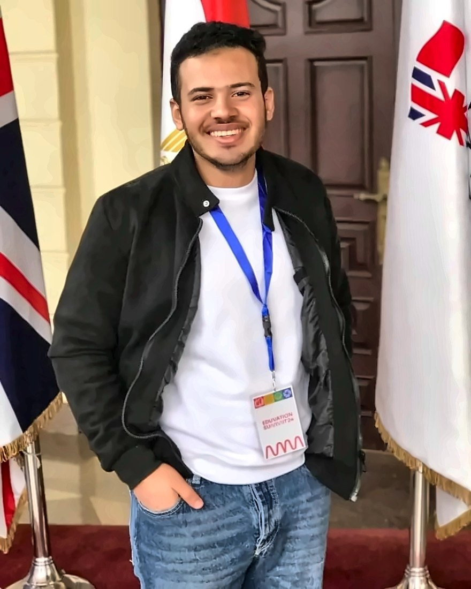

رؤيتنا
أن تكون Biosyn المنصة العربية الأولى للتعليم العلمي والطبي، والمكان اللي يبدأ منه كل طالب وباحث عربي رحلته في العلوم والطب.
Biosyn Eg منصة مصرية للتعليم العلمي والطبي ، بنقدّم محتوى متخصص يتم شرحه بالعربي للطلاب والباحثين وأعضاء هيئة التدريس في الجامعات.
الأرقام دي بتتحدث تلقائي مع كل طالب جديد وكل دولة جديدة
انطلقت Biosyn Eg سنة 2020 بفكرة بسيطة: إن الطالب والباحث العربي يقدر يتعلم العلوم الحيوية والطبية بلغته، وبمحتوى عملي بيربط النظرية بالمعمل وبسوق العمل.
من 2020 لحد النهارده قدّمنا خدماتنا التعليمية والبحثية لأكتر من 20 ألف طالب وباحث وعضو هيئة تدريس في الجامعات، في 7 دول، من خلال كورسات مسجلة وبرامج تفاعلية واستشارات بحثية وبرامج تدريب للمؤسسات.
أن تكون Biosyn المنصة العربية الأولى للتعليم العلمي والطبي، والمكان اللي يبدأ منه كل طالب وباحث عربي رحلته في العلوم والطب.
نوصّل المعرفة العلمية المتخصصة بالعربي وبجودة عالية وبسعر في متناول الطلاب، ونجهّز الطلاب والباحثين بمهارات عملية مطلوبة في البحث العلمي والصناعة.
مكتبة كورسات في البيولوجيا الجزيئية والوراثة والمناعة والميكروبيولوجي وغيرها، كلها باشتراك واحد وتتشاف في أي وقت.
جلسات مباشرة مع محاضرين متخصصين، فيها تطبيق عملي ومشاريع ومتابعة.
مساعدة في تصميم الأبحاث وتحليل البيانات والمعلوماتية الحيوية للطلاب والباحثين.
برامج تدريب مخصصة للجامعات والمعامل والشركات والمؤسسات الطبية.
كل كورس بيدي شهادة إتمام عليها رقم وكود QR، وأي جهة تقدر تتأكد منها من موقعنا.

مؤسس
أسّس Abdo Mostafa منصة Biosyn Eg سنة 2020، وهو حاصل على بكالوريوس العلوم بيعمل على بناء المنصة وفريق المحاضرين عشان المحتوى العلمي المتخصص يبقى متاح بالعربي وبشكل عملي لكل طالب وباحث.
فريقنا بيرد على الإيميل والواتساب في أوقات العمل.